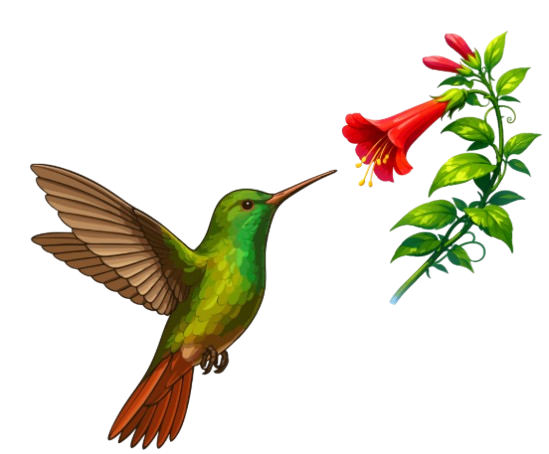

It’s just a place to document things I work on, things I notice, and things I like. Field days. Ideas that don’t yet fit into papers. Thoughts that happen somewhere between observation and analysis.